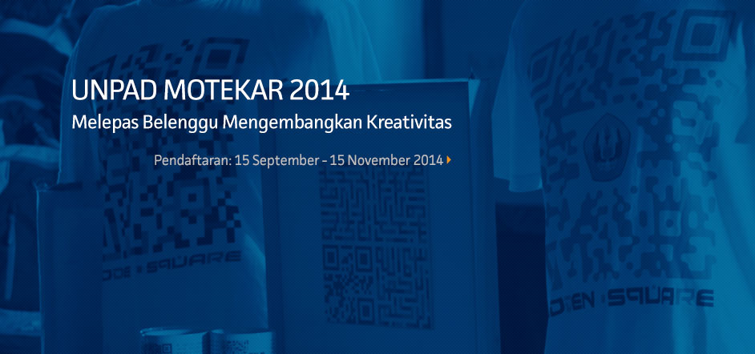

Universitas Padjadjaran
English
Indonesia
Peta Situs
Alumni
Arsip
Universitas
Fakultas
Karya Ilmiah
Berita Unpad
Home
Universitas
Fakultas
Karya Ilmiah
Berita Unpad

Pembelajaran
Penelitian & Pengabdian
Keuangan
Pencarian:
Berita Unpad
27 November 2014
Waspada, Kenali Modus Penipuan Penerimaan Mahasiswa Baru!
27 November 2014
Jika Tidak Dikendalikan, Pertumbuhan Penduduk Picu Munculnya Berbagai Masalah di Indonesia
25 November 2014
Yulianti Raih Juara I Pustakawan Berprestasi Terbaik Jawa Barat 2014
24 November 2014
Perjelas Nomenklatur, Unpad Gelar Simposium Arah Perkembangan Ilmu Pemerintahan di Indonesia
Agenda Kegiatan
29
Nov
Grow Old with Pena Bangsa
29
Nov
DKM An-Nahl Fakultas Peternakan Universitas Padjadjaran Selenggarakan Islamic Student Festival 2014
30
Nov
Lomba dan Workshop Fotografi Compilation 2014
1
Des
Himpunan Mahasiswa Profesi Apoteker & BEM Kemafar Unpad Gelar Career and Job Fair
Profil
Dr. Selly Riawanti, SS., MA, “Baca Buku Satu Rak Belum Tentu Paham, Mengalami Sendiri Akan Lebih Mudah Memahami”
Pengumuman
Hasil Tes Kompetensi Dasar (TKD) Seleksi CPNS Tahun 2014 di Lingkungan Universitas Padjadjaran
Hasil Seleksi Program Spring Semester 2015-2016 di Rikkyo University Jepang
Beasiswa
Chulalongkorn University’s Scholarship Program for ASEAN Countries
Beasiswa Pascasarjana (Magister Manajemen) PPM School of Management Jakarta
UnpadTV
Kemeriahan Ootrad ke-7 Tahun 2014
Radio Unpad
Tautan
Webmail
PAuS ID
Portal Staffs
SIAT
PADI
Siskeu
Jurnal
Pustaka
CDC Unpad
SMUP
Portal Students
AIPT
Kepegawaian
LPPM
P3IB
Cisral
Vabel
Foto Wisuda
Media Sosial
Facebook
Flickr
Twitter
Youtube